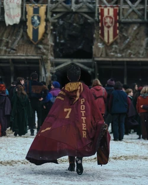

A New HBO Original Series Christmas 2026 Harry Potter (HPTV) Welcome to the Wizarding World of Harry Potter! Harry Potter and the Philosopher's Stone is the first season of the Harry Potter television series and is an upcoming adaptation of Harry Potter and the Philosopher's Stone by J. K. Rowling; it is produced by Warner Bros. for the streaming service HBO Max. The series, premiering on Christmas 2026, will offer a new look for the beloved franchise that is faithful to the books and expands the lore. Witnessing Peeves the Poltergeist's mayhem. Diving deeper into the lore of Albus Dumbledore (John Lithgow). Seeing Hermione Granger (Arabella Stanton) receiving her Hogwarts letter. Finding out the reason behind Ron Weasley's (Alastair Stout) mysterious mark on his nose. Meeting the Flamels (Lambert Wilson), with a first look at Perenelle Flamel (Marthe Keller)! And experience falling asleep in classes we didn't get to see in the films, like Professor Binns's most boring History of Magic lecture. And much more! Watch the beginning journey of Harry Potter, starring Dominic McLaughlin, in Harry Potter and the Philosopher's Stone. The series will be available for streaming on HBO Max. The franchise is calling you back, and Hogwarts is calling you home.